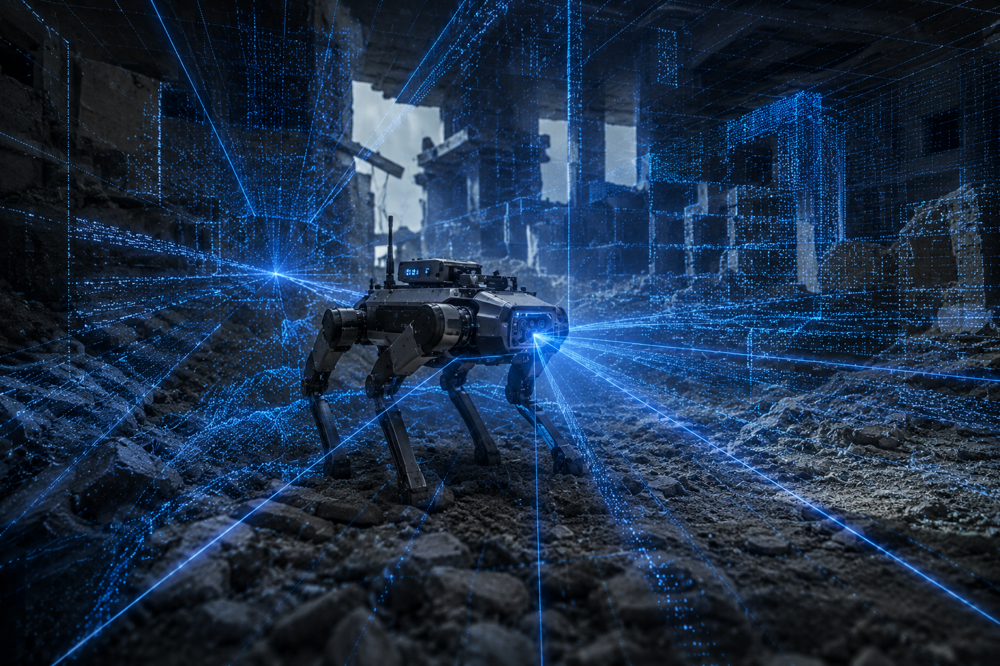

스스로 움직이는 미래, VELTROX의 혁신적인 재난용 로봇

시야 확보가 불가능한 짙은 연기나 암흑 속에서도 3D LiDAR 센서를 통해 주변 환경을 실시간으로 스캔하고 정밀한 입체 지도를 생성하여 안전한 수색 경로를 확보합니다.

딥러닝 기반의 객체 인식 알고리즘을 탑재하여 붕괴 잔해 속에 쓰러져 있거나 조난된 인명을 고성능 비전 카메라로 신속하게 식별하고 위치를 추적합니다.

눈으로 보이지 않는 두꺼운 연기나 가려진 장애물 뒤의 미세한 체온을 열감지 센서로 포착하여 수색 효율을 극대화하고 조난자의 생존 여부를 판단합니다.

초광대역(UWB) 레이더 센서 기술을 활용해 잔해더미 깊숙한 곳에 묻혀 있는 생존자의 미세한 호흡과 심장 박동 등 생체 신호를 벽 너머로 감지하는 첨단 탐지 기술입니다.